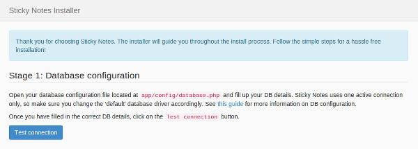
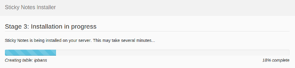

Sticky Notes 1.x comes with an automatic installation utility. The installation process is interactive and very simple. This guide covers a step-by-step walkthrough of the installation process from end to end.
Download the latest stable version of Sticky Notes 1.x from here. After downloading, extract the ZIP archive to your favorite location.
Sticky Notes is a PHP application, so you will need a web server running, if you don't have one already. Follow the links below for setting up your web server and a database engine:
Once you have apache up and running, you will have a web root folder, which is
usually located at /var/www on Linux systems and
C:\Program Files\Apache Software Foundation\Apache<version>\htdocs
on Windows machines. Copy the contents of the public folder to your
web root. If you are running multiple websites on the server, you may create any
sub-folders inside your web root accordingly. You can copy all other files in
the Sticky Notes archive to any location on your server, including the web root itself.
bootstrap folder is correctly
set inside the public/index.php file.
You'll need to change the permissions on the app/storage folder, and
all of its subfolders to make them writable by apache. On linux systems, apache
usually runs as the user www-data - so you'll need to make the folder
writable by the user under which apache is running on your system. When in doubt,
you can always set the storage folder's (and its subfolder's)
permissions to 777, however it is recommended to limit the write
access to apache's user only.
The installer does not create the database on the DB server for security reasons,
it only creates and modifies tables. Once you have created the database manually,
go to the app/config folder and rename database.sample.php
to database.php. Now open the database.php file and fill
in your database server details. There are three main things to do here:
default connection.
Currently, sqlite, mysql, pgsql and
sqlsrv are supported.
connections section.
sqlite driver, please make sure that not only
your database file (typically located under app/database) but the
database folder itself if writable by apache.
If everything goes well, opening http://yoursite.com should serve you
the Sticky Notes installer screen:

Once you click on the Test connection button, Sticky Notes will check
your database connection. If successful, you will see a Start installation
button. If the database connection fails, Sticky Notes will tell you what went
wrong.
Clicking on the Start installation button will begin the installation
process:

Once installation is complete, the installer will give you a set of admin credentials. Please make a note of those credentials. You can change them at any point of time later by logging into the admin panel.
That's it! Your new Sticky Notes instance is ready to use.